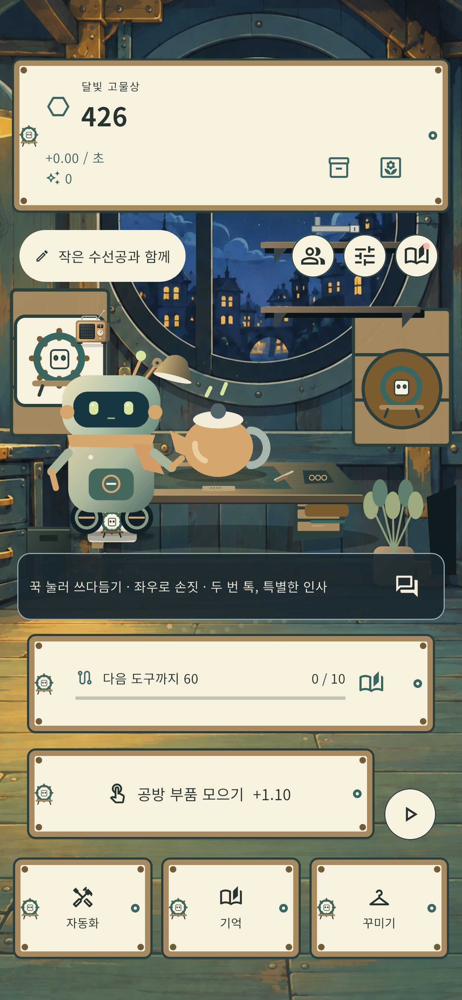
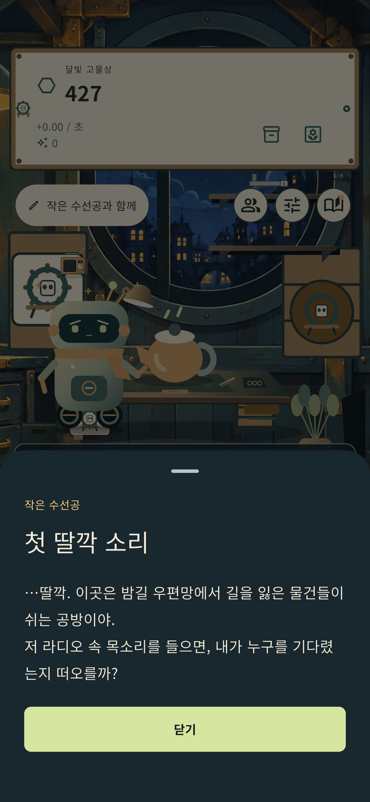
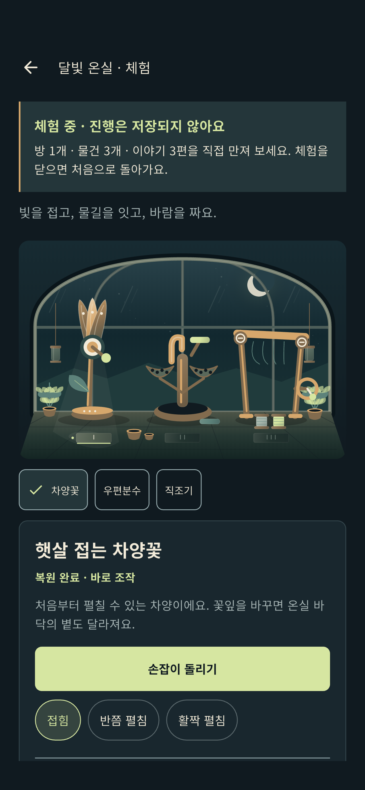

반짝이는 부품을 모으고
공방에 쌓인 부품을 모아 첫 도구를 마련해요. 작은 손길이 다음 수선을 준비합니다.
A little workshop, a long way home
밤길 우편망 끝자락의 작은 공방. 부품을 모으고, 물건을 고치고, 수선공과 함께 소포에 남은 이야기를 알아가는 모바일 게임을 만들고 있어요.
개발 중 · 일반 이용자용 공개 다운로드와 계정 서비스는 아직 제공하지 않습니다.
Inside the workshop
공방에서 친구와 만나고, 기억을 읽고, 달빛 온실을 체험해 보세요.
옆으로 넘겨 세 장의 화면을 둘러보세요.

원본 크게 보기작은 수선공과 함께 공방에서 부품을 모으고 수선을 시작해요.

원본 크게 보기수선 중 친구가 남긴 첫 번째 기억을 읽어요.

원본 크게 보기진행이 저장되지 않는 체험에서 온실의 물건을 직접 만져 봐요.
개발 중인 iOS 시뮬레이터의 실제 게임 화면 · 한국어 UI · 화면을 누르면 원본을 크게 볼 수 있어요.
Small repairs. Quiet discoveries.
거대한 우주를 구하는 일보다, 누군가의 물건을 다시 쓸 수 있게 만드는 일부터.
공방에 쌓인 부품을 모아 첫 도구를 마련해요. 작은 손길이 다음 수선을 준비합니다.
도구를 늘리고 낡은 물건을 하나씩 복원해요. 흠집과 흔적도 이야기의 일부예요.
수선공과 함께 물건에 남은 사연을 따라가요. 평범해 보였던 소포가 누군가의 기억으로 이어집니다.
출시 전 안내
게임은 개발·시험 단계입니다. 공개 출시 일정과 실제 제공 기능은 확정된 내용으로 다시 안내합니다.
이 웹사이트에는 게임 로그인, 계정 생성, 광고 시청, 결제 또는 다운로드 기능이 없습니다.
마지막 업데이트: 2026년 10월 3일
개발 중 · 일반 이용자용 공개 다운로드와 계정 서비스는 아직 제공하지 않습니다.
개발 및 개인정보 문의: ialskdji@gmail.com. 문의할 때 필요한 정보와 개인정보 안내를 먼저 확인해 주세요.